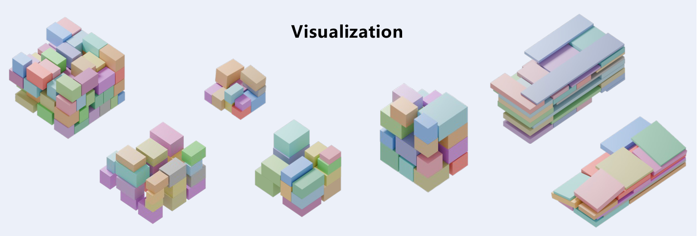

To get the RoboBPP datasets, please Download. After opening the form, select the dataset(s) you want, provide your name and email address, and submit the form. You will then receive an email containing the download link(s) for the selected dataset(s).
Request dataset access ↗